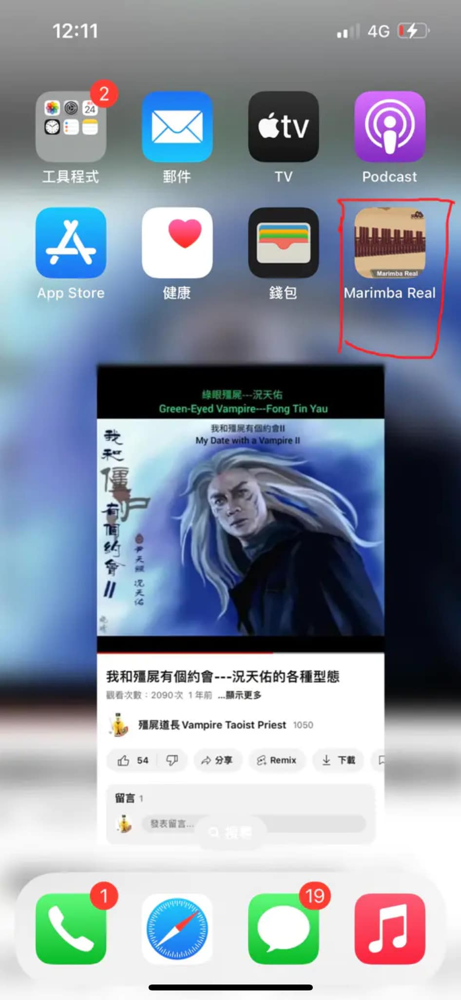

🎵 樂器 App 推薦｜Marimba Real
想和各位音樂同好分享一款我最近覺得很有趣的樂器 App —— Marimba Real （如下圖紅框所示）：
📱 Marimba Real App 畫面：

這款 App 提供了五種打擊樂器模擬，分別是：
Marimba（馬林巴琴）
Xylophone（木琴）
Vibraphone（氈音琴）
Glockenspiel（鐘琴）
Tubular Bell（管鐘）
📱 使用者可自訂八度、琴鍵數量、樂器模擬，但是必須關閉靜音模式才能發出聲音：
🎹 使用心得分享：
我自己本身是學鋼琴的（想看我彈鋼琴的朋友可以在小紅書 上關注我），但由於這些打擊樂器的琴鍵排列和鋼琴一樣，所以蠻容易上手。
👉 優缺點簡評：
優點： 琴鍵面積大、不容易誤觸，適合彈奏旋律與簡易合奏。缺點： 琴鍵數量少，不利於多八度跨越與複雜雙手演奏，有時伴奏與旋律會「搶鍵」。
相較之下，另一款名為《Perfect Piano 》的樂器App允許顯示更多琴鍵，更適合完整雙手演奏，且在靜音模式下也能發出聲音，但音域過大時會導致琴鍵鍵較小並且容易彈錯音。
🎧 彈奏影片分享：
以下是我用 Marimba Real 彈奏的三十一段旋律影片，歡迎大家收聽🎶：
《一眉道人戰鬥曲》（此旋律出自林正英自導自演的電影《一眉道人 》） 《殭屍復活II》（此旋律出自香港電影《殭屍家族》） 《百鬼霧林》（此旋律出自香港電影《新殭屍先生》中經典的紅白雙煞片段） 《光的戰役-女聲版》（此旋律改編自《鎧甲勇士光影傳奇》片尾曲《光的戰役 》） 《戰鬥-通往勝利》（此旋律為《鎧甲勇士光影傳奇》插入曲，透過C大調呈現） 《查理九世》（此旋律為《戰鬥-通往勝利》之抒情版，且透過G大調呈現） 《淡淡的愛意》（此旋律為《鎧甲勇士光影傳奇》插入曲） 《帝皇再臨 正常版》（此旋律為《鎧甲勇士之帝皇俠》插入曲） 《帝皇再臨 抒情版》（此旋律為《鎧甲勇士之帝皇俠》插入曲） 《不敗的英雄》（此旋律為《鎧甲勇士刑天》主題曲） 《Just K.O》（此旋律為《鎧甲勇士拿瓦》主題曲） 《ウルトラセブンの歌》（此旋律為《超人七號》主題曲） 《帰ってきたウルトラマンの歌》（此旋律為《歸來的超人力霸王》主題曲） 《ウルトラマンレオの歌》（此旋律為《超人力霸王雷歐》主題曲） 《Take Me Higher》（此旋律為《超人力霸王迪卡》主題曲） 《Love Theme From Tiga》（此旋律為《超人力霸王迪卡》插入曲，改編自其主題曲《Take Me Higher》。不過兩者的差別在於，《Take Me Higher》是熱血風格且演奏過程是A大調再轉成升F大調，而《Love Theme From Tiga》是悲壯風格且演奏過程是C大調再轉成A大調） 《君だけを守りたい》（此旋律為《超人力霸王帝納》片尾曲，翻成中文為"只想守護你"） 《Theme of Ultraman Gaia Fighting Easy Version》 《Something You Can Do》（此旋律為《超人力霸王高斯》片尾曲，原名為"君にできるなにか"） 《ジードの証》（此旋律為《超人力霸王捷德》主題曲） 《ハリケンジャー参上》（此旋律為《忍風戰隊破裏劍者》主題曲） 《幸せShaking Hands》（此旋律為《忍風戰隊破裏劍者》第三十話插入曲） 《Ninpuu Shinobi Change》（此旋律為《忍風戰隊破裏劍者》插入曲） 《仮面ライダークウガ》（此旋律為《假面騎士空我》主題曲） 《Life Goes On》（此旋律為《超星神格蘭賽沙》主題曲） 《魔弾戦記リュウケンドー》（此旋律為《魔彈戰記龍劍道》主題曲） 《好想大聲說喜歡你》（此旋律為《灌籃高手》主題曲） 《穿越時空的思念》 《Samsung Galaxy Ringtone - Homecoming》 《感冒用斯斯》 《收酒矸》
📱 講解完Marimba Real後，我也順便簡單介紹一下《Perfect Piano》這款App —— 如我剛才所說，不管有沒有靜音都能彈出聲音，而且可以跨的八度範圍更廣，但也較容易出錯就是了（如下影片所示）：
以下是我用《Perfect Piano》彈奏的二段旋律影片，大家也可以參考一下：
《Ultraman Ace Theme Song》 《Ultraman Mebius Theme Song》
註：以下就是我用實體鋼琴演奏的十七首我認為很好聽的旋律，各位也可以聆聽
《鬼新娘》 《殭屍先生》（此旋律出自同名電影《殭屍先生》中，九叔與四目道長合力制伏殭屍的片段） 《殭屍先生-整蠱》 《光的戰役》 《ウルトラマンの歌》（此旋律為《初代超人力霸王》主題曲） 《遊星から来た兄弟 勝利》（此旋律為《初代超人力霸王》插入曲） 《ウルトラマンタロウの歌》（此旋律為《超人力霸王太郎》主題曲） 《The Light of Humanity》（此旋律為《超人力霸王迪卡》插入曲） 《光を継ぐもの》（此旋律為《超人力霸王迪卡》插入曲） 《Spirit》（此旋律為《超人力霸王高斯》主題曲） 《Eiyuu》（此旋律為《超人力霸王納克斯》主題曲） 《Hibiki No Shirabe》（此旋律為《百獸戰隊牙吠連者》插入曲） 《Alive A Life》（此旋律為《假面騎士龍騎》主題曲） 《一笑江湖科目三》 《River Flows In You》 《益可膚》 《中華民國軍樂：下課號》
🔔 總結：
對於習慣鋼琴鍵盤、但想嘗試打擊樂器音色的朋友來說，Marimba Real 是一款不錯的入門工具。如果你對馬林巴、木琴、管鐘等聲音感興趣，不妨也來玩玩看！
留言內容：
作者：周彥廷